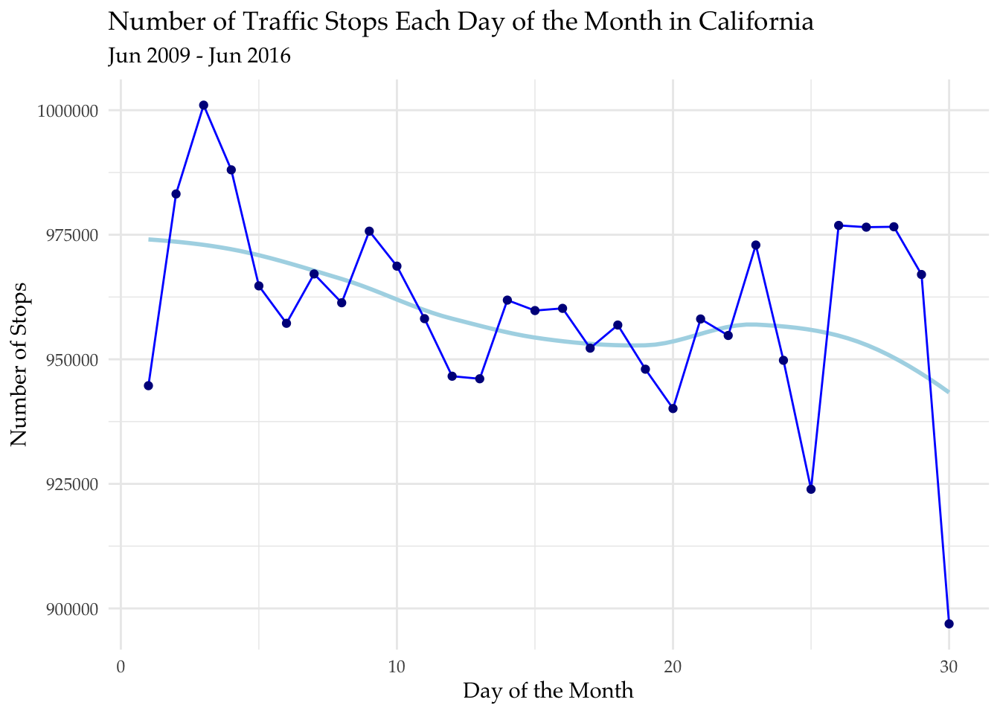

SELECT raw_descent_description AS race,
count(*) AS race_count,
YEAR(date) AS year
FROM ca_los_angeles_2020_04_01
GROUP BY race, year
HAVING year BETWEEN 2010 and 2017
ORDER BY year, race;Analyzing United States Policing Data
A Quick Look into Traffic Stop Data in the United States
Every Day, police officers throughout the United States make thousands of traffic stops, inderectly compiling millions of pieces of data over the courses of deacdes. The Standford Open Policing Project has 88 data tables, which consist of 42 states, various city police departments, and state patrol records. The data ranges from 1999 to 2020, depending on the table. In this brief analysis, we will look at data from Los Angeles, Chicago, and California State Patrol, gathering information regarding demographics, the violation committed, and frequency of traffic stops.
First, we will look at the demographic distribution over time for traffic stops conducted in the city of Los Angeles, California. While the data set includes information from December of 2009 to June of 2018, the range 2010 - 2017 was used to include all full years of data.
From 2010 to 2017, Hispanic individuals were stopped by police more frequently than any other race. While some people may immediately conclude that police officers in Los Angeles are more likely to stop people of Hispanic descent, it is important to take into consideration the demographic composition of the city itself. The United States Census Bureau lists that Hispanic or Latino individuals make up about 48.6% of the population, more than any other race. The same report lists that white people make up about 25.3% of the population, while those of black descent make up about 9.0% of the population, both much lower than 48.6%.
Next, we will investigate common traffic violations in Chicago, Illinois. There are dozens of possible violations, so only those with 40,000 or more occurances were taken into account, giving us the top ten most common violations.
SELECT violation AS Violation,
count(*) AS Count
FROM il_chicago_2023_01_26
GROUP BY Violation
HAVING Count >= 40000
ORDER BY Count DESC;| Top 10 Traffic Violations in Chicago | |
|---|---|
| Dec 2011 - May 2020 | |
| Violation | Count |
| HEADLIGHT TWO REQUIRED-MOTOR VEHICLE | 280628 |
| STOP AT STOP SIGN | 248009 |
| LIGHT, TAIL LIGHTS REQUIRED | 110740 |
| DRIVING ON SUSPENDED LICENSE | 90483 |
| DISPLAY ST REG-FRONT/REAR | 90143 |
| DRIVING WHILE USING CELLULAR PHONE PROHIBITED | 67281 |
| DISOBEY RED CIRCULAR STEADY SIGNAL STOP | 64055 |
| REGISTRATION PLATES | 58338 |
| NO VALID REGISTRATION | 51230 |
| DISPLAY ST REG-REAR MOTRCYCL/TRLR/SEMI-TRLR | 49153 |
Failing to have two functional headlights and failing to stop at a stop sign appear to be the two most common traffic violations in Chicago, with over 100,000 more occurances than the third most common violation, which is failing to have two working tail lights. Four common violations all relate to registration: failure to display registration, no valid registration, no registration plates, and failure to display registration, this time for motorcyles and trailers. Some other common ones are driving on a suspended license and driving while using a cellphone.
Last, we can add up the numbers of stops for each day of the month to see whether or not the California State Patrol tends to conduct more traffic stops at the beginning of the month, end of the month, or somewhere in the middle. Only 30 days were used, instead of 31, due to every month having at least 30 days aside from February.
SELECT EXTRACT(DAY FROM date) AS day,
count(*) AS num_stops
FROM ca_statewide_2023_01_26
GROUP BY day
HAVING day <= 30
ORDER BY day;
There appears to be a slight tendency to conduct more traffic stops during the first few days of the month. The light blue regression line indicates a slight inverse relationship between the day of the month and number of stops. While the differences are not huge, the small trend could have an explation. For example, if quotas happen to exist within an agency, officers may be inclined to complete these quotas as soon as possible, slowly easing off once they have reached it.
Overall, data gathered from traffic stop reports has the potential to reveal extremely interesting trends. We were able to easily examine the demographic composition of Los Angeles traffic stops, comparing them to the actual demoagraphics of the city. We found that Hispanic individuals get stopped at a more frequent rate than other races, though they make up the majority of the overall population. In Chicago, the most common traffic violations were not having two working head lights and failing to stop at a stop sign, neither of which were very surprising. What was interesting was the violation that ranked fourth in frequency, driving with a suspended license. If almost 100,000 people were pulled over for not having a valid license, one can only imagine the number of people who get away with it and are driving every day. Finally, we discovered that, though small, there is some correlation between the day of the month and the frequency of traffic stops conducted. It was observed that it may be more likely to get pulled over during the first few days of the month compared to the end of the month, though the difference in frequency was not huge.